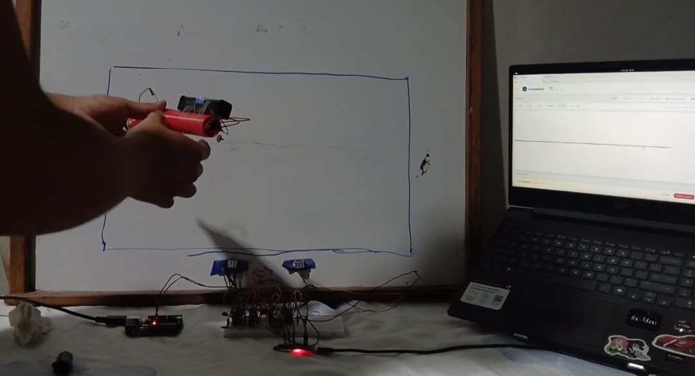
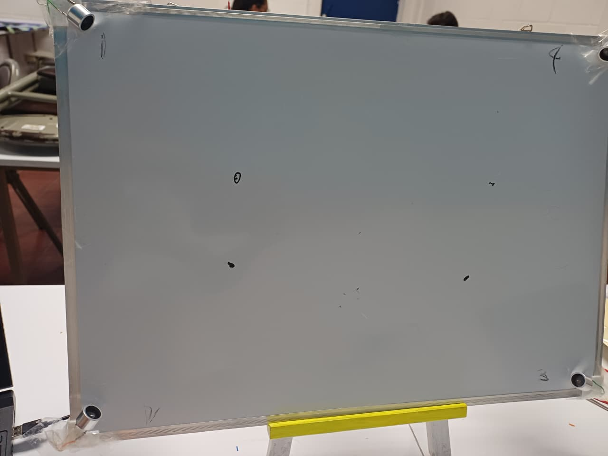
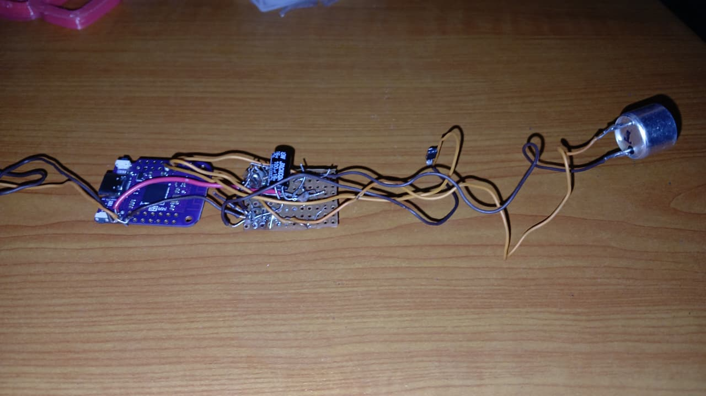
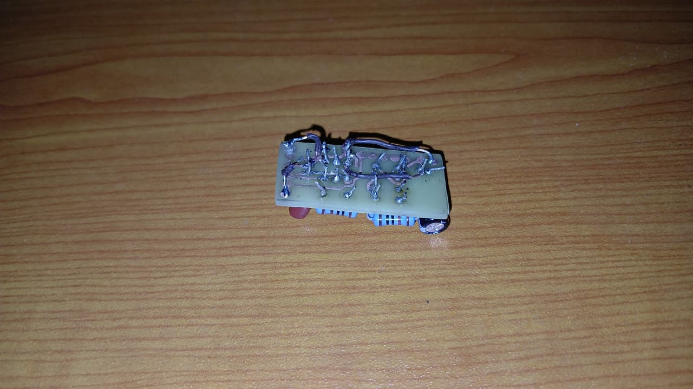
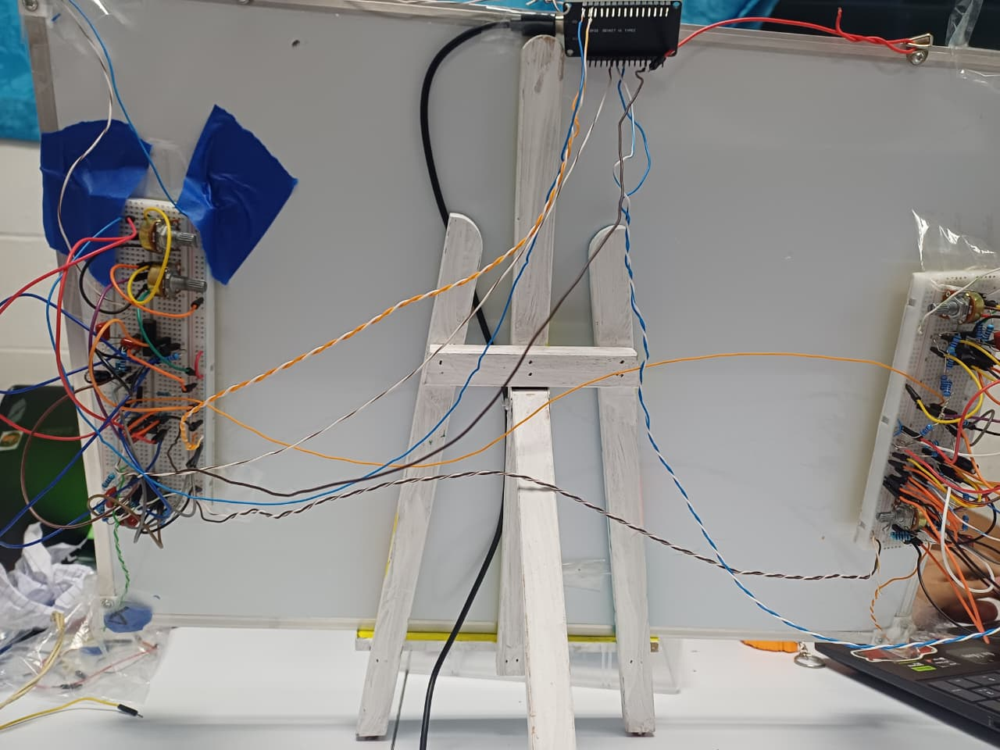
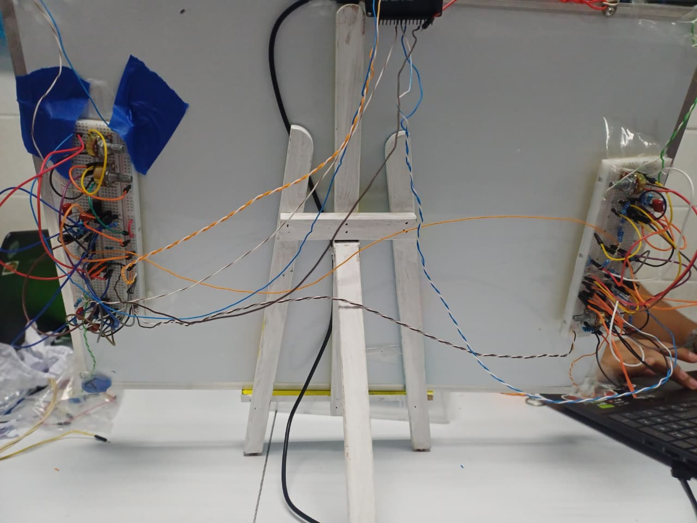

INNOVABOARD
Transforma cualquier aula convencional utilizando un plumón adaptado con ultrasonido e infrarrojo, transmitiendo trazos en tiempo real por sockets locales a las laptops de los estudiantes.

Pila Tecnológica del Proyecto
Combinación robusta de hardware embebido y software en tiempo real para un rendimiento óptimo en el aula.
Hardware Embebido
Módulo ESP32 integrado con sensores ultrasónicos e infrarrojos en un plumón adaptado para capturar con precisión las coordenadas exactas de escritura sobre cualquier superficie plana.
- ▸ Captura ultrasónica e IR
- ▸ Procesamiento en ESP32
- ▸ Bajo consumo energético
Backend & Red Local
Servidor central en Node.js utilizando Sockets para enrutar los trazos instantáneamente a todas las laptops de los estudiantes conectados a la red local.
- ▸ Node.js & Express
- ▸ Comunicación por Sockets
- ▸ Historial de clases local
Inteligencia Artificial
Asistente inteligente "Board" controlado directamente por el docente para generar resúmenes automáticos, responder consultas del chat estudiantil y estructurar apuntes pedagógicos.
- ▸ Asistente "Board" IA
- ▸ Supervisión docente
- ▸ Generación de contenidos
Arquitectura y Flujo del Sistema
Visualiza cómo viaja la información desde la pizarra física hasta los dispositivos de los estudiantes en tiempo real.
Captura Física
Docente escribe con el plumón con ultrasonido/IR.
Procesamiento ESP32
El ESP32 empaqueta y transmite la señal vía red local.
Servidor Node.js
Distribución por Sockets a clientes y gestión de IA.
Laptops de Alumnos
Visualización en tiempo real, chat e historial activo.
Características Principales
Diseñado específicamente para optimizar la interacción pedagógica moderna en cualquier entorno.
Trazos en Tiempo Real
Digitalización instantánea de cada palabra y diagrama trazado en la pizarra tradicional reflejado en las pantallas estudiantiles.
Chat Estudiantil
Espacio de participación colaborativa por texto donde los estudiantes pueden interactuar y realizar preguntas ordenadas.
Historial de Clases
Almacenamiento automático y estructurado de todas las sesiones pasadas para repaso posterior por parte de los alumnos.
Asistente IA "Board"
Inteligencia artificial supervisada por el docente que asiste en la explicación de conceptos y generación de apuntes clave.
Galería del Proyecto
El prototipo real de InnovaBoard: sensores, electrónica y montaje de la pizarra.

Pizarra con sensores ultrasónicos
Sensores colocados en las esquinas de la pizarra.

Módulo ESP32 y sensor
Microcontrolador, circuito de apoyo y sensor ultrasónico.

Placa electrónica
Circuito compacto armado a mano.

Parte trasera: circuitos
Circuitos de recepción y cableado detrás de la pizarra.

Montaje en caballete
Pizarra sobre caballete con el ESP32 conectado.
Conclusión del Proyecto
Resumen ejecutivo e impacto de la solución tecnológica InnovaBoard.
Viabilidad y Accesibilidad Económica
InnovaBoard demuestra la viabilidad de digitalizar pizarras tradicionales mediante hardware de bajo costo (ESP32 y sensores ultrasónicos/infrarrojos), evitando costosas pantallas interactivas comerciales.
Conectividad Local Estable
Gracias al uso de Sockets en red local, el sistema opera de manera fluida y estable dentro del aula, con baja latencia en la transmisión de los trazos.
Modernización Pedagógica Integral
El proyecto enriquece el proceso de enseñanza combinando la captura tradicional de trazos con herramientas interactivas avanzadas como chat estudiantil, historial y el asistente IA docente.